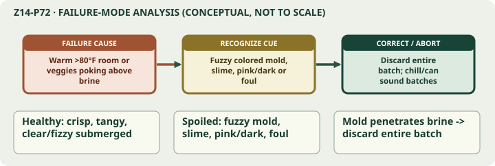

Z14-P72 · Food production and preservation · New manuscript
Identify spoilage, off-odors, and mold in home ferments and discard cleanly
Distinguish healthy tangy lacto-fermentation from spoiled slimy, dark, or mold-contaminated batches before tasting.
When it applies · Monitoring active lacto-fermented sauerkraut, kimchi, and brined cucumber pickles.
Equipment · Clean skimming utensils, visual/odor inspection routine, and tested cold-storage or canning completion plan.

Actions
- Use the spoilage and storage criteria from the exact tested ferment. If mold, abnormal odor or texture, or process deviation raises doubt, stop and seek Extension advice. Never taste to check safety.[P13, P10]
- Recognize clear spoilage failure cues: fuzzy colored mold (black, blue, green, pink, or heavy fuzzy white mats growing on exposed vegetables or brine), slimy ropy brine, mushy soft hollow pickles, darkened brown/pink discoloration, or putrid/rotten/cheesy odors.[P13, P10]
- Discard ANY moldy, slimy, mushy, or foul-smelling ferment completely—mycotoxins and off-pathogens penetrate liquid brine far deeper than visible surface mold; once a healthy ferment finishes cleanly, move it promptly to cold refrigerator storage (≤40°F) OR process per a tested NCHFP boiling-water recipe.[P13, P10]
Failure recognition · Scooping green fuzzy mold off the top of a warm sauerkraut crock and eating the soft pink cabbage underneath.[P13, P10]
Verify · Confirm crisp texture, clean tangy aroma, zero colored/fuzzy mold or slime, and timely transfer to ≤40°F cold storage or tested canning.[P13]
Stop or change course · Any sliminess, rotten odor, pink/black discoloration, or fuzzy mold halts consumption immediately—discard and wash/sanitize the vessel thoroughly.[P13, P16]
Evidence and editorial notes
- P10 · NCHFP · Identifying and Handling Spoiled Canned Food (current web edition)
- Section: Identifying and Handling Spoiled Canned Food · Conditions: Suspect home-canned food; identify sealed versus open or leaking without exposure
Support: Do not taste. Isolate from people and animals and use current NCHFP or local public-health disposal advice.
Limitations: A sealed lid alone cannot establish a safe process. Reprocessing a sound unsealed jar has separate conditions. Suspected exposure is P23. · Conflicting evidence: See A02 claim audit for boundaries.
Editorial note: Anchors spoilage inspection and safe disposal in Z14. · Specialist reviewer: Food microbiology and public health
Primary source · checked 2026-11-24 - P13 · NCHFP · Fermenting and Pickling Foods (current web edition)
- Section: Fermenting and Pickling > Salt Ratios, Vinegar Acidity, and Submerged Brine · Conditions: Tested lacto-fermented vegetables (sauerkraut/pickles) and vinegar quick-pickles
Support: Use standardized 5% acidity vinegar for tested pickle recipes and exact weighed/measured canning-and-pickling salt (not iodized/anti-caking salt) plus clean food-grade crocks and submerged weights for lacto-fermentation at controlled temperatures.
Limitations: Altering salt/vinegar ratios or allowing surface mold/scum in warm rooms causes spoilage and unsafe pH drift. · Conflicting evidence: None; separates tested fermentation/pickling from improvised brining.
Editorial note: Grounds fermentation, pickling, and acidity verification cards. · Specialist reviewer: Food microbiology and Extension preservation
Primary source · checked 2026-11-24 - P16 · USDA / FDA / CDC · Four Steps to Food Safety (current web edition)
- Section: Clean, Separate, Cook, Chill > Produce Washing and Cross-Contamination · Conditions: Garden-to-kitchen harvesting, food prep, and preservation workspaces
Support: Wash hands 20 seconds with soap and safe water, scrub firm produce under running safe water before peeling/cutting, keep raw animal foods strictly separate from ready-to-eat produce, and sanitize prep surfaces and utensils between tasks.
Limitations: Washing produce with soap, detergent, or bleach is unsafe and not recommended. · Conflicting evidence: None; extends F01–F03 into garden harvest and home preservation.
Editorial note: Anchors kitchen sanitation and cross-contamination barriers in Z14. · Specialist reviewer: Food safety and public health
Primary source · checked 2026-11-24
Source lineage · NCHFP Fermenting and Pickling Foods; new manuscript · Classification · New manuscript.